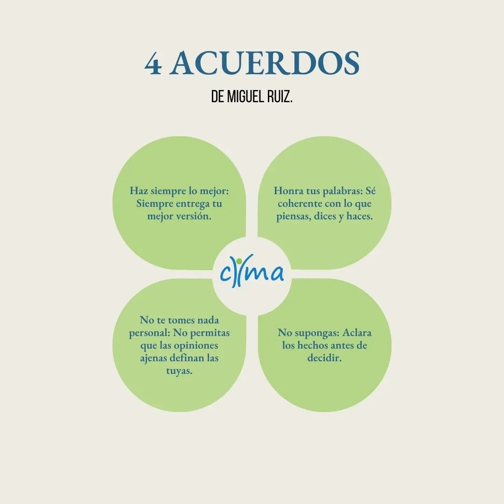
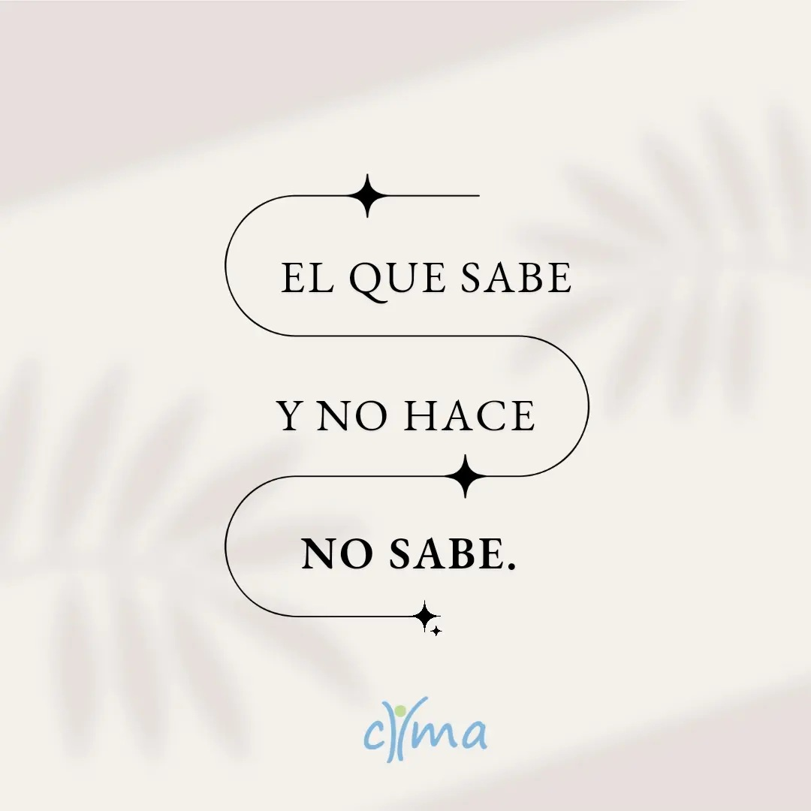
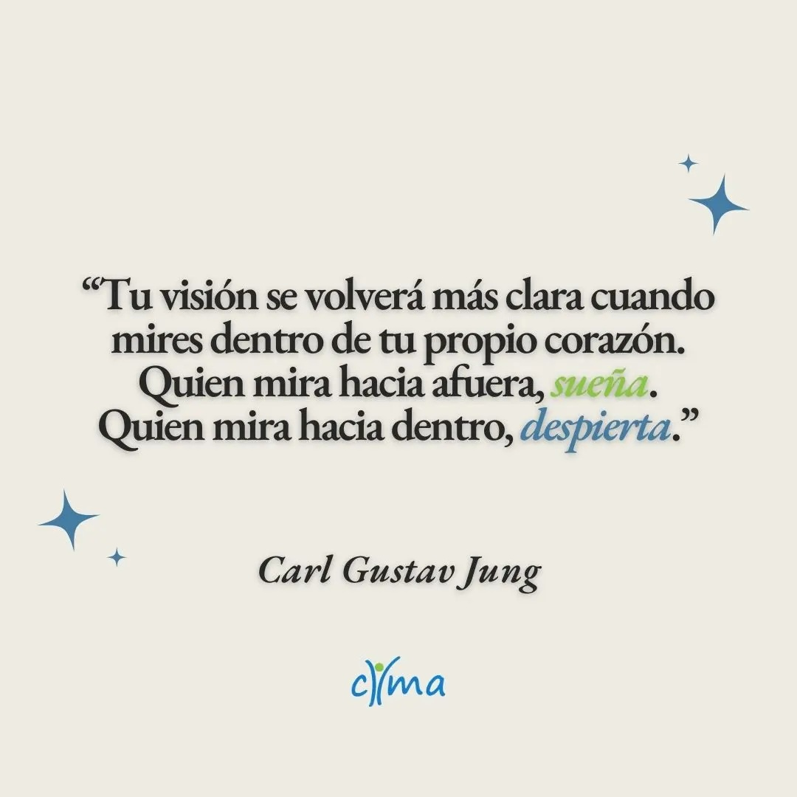
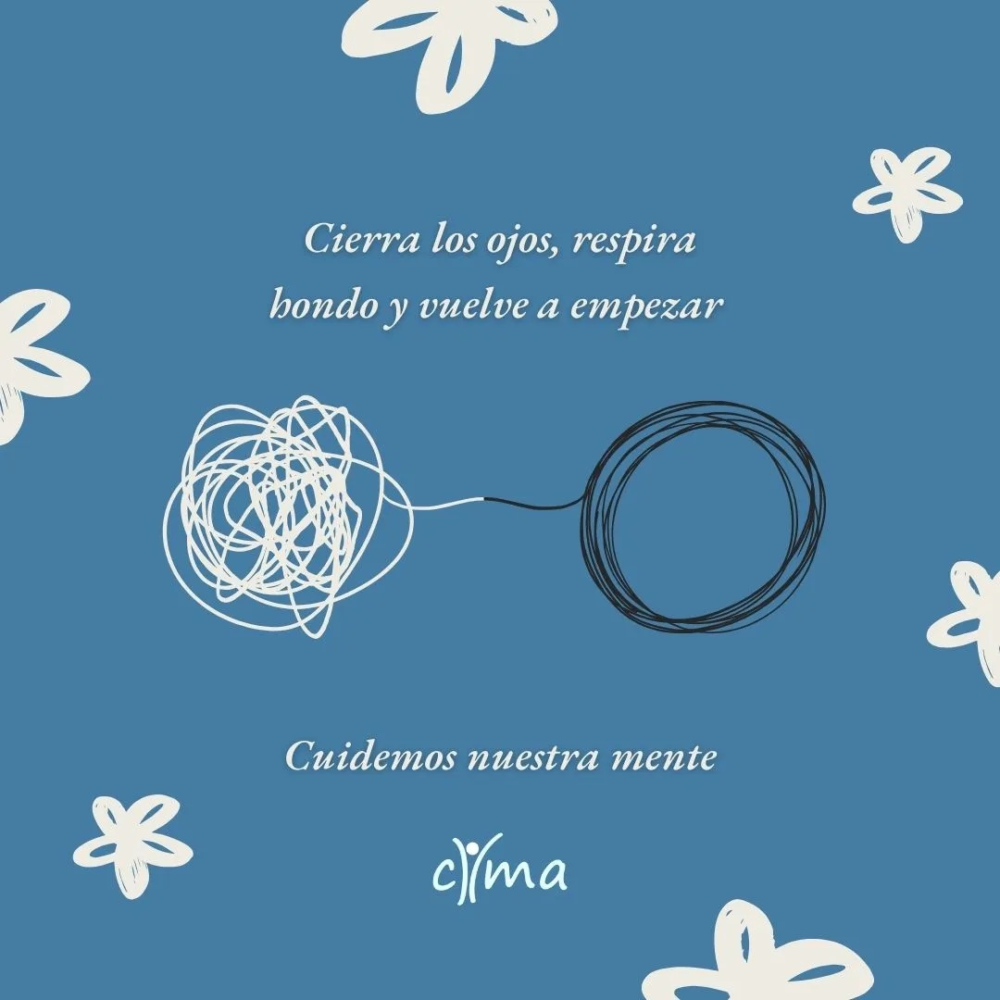

Esto no es para leer.
Es para quedarse con algo.
Antes de cualquier pregunta, hay que ver desde dónde se contesta.

Vivís con él desde siempre.
No es el problema.
Lo que hacés cuando aparece, sí.

Había más adentro
de lo que creías.

Todo lo que sentís toma decisiones.
A veces antes de que te des cuenta.


Si algo de lo que viniste viendo te generó algo,
fijate bien a quién se lo atribuiste.
El problema no es no saber.
Es el día después de que supiste.




No hace falta tener todo claro. Hace falta dar un primer paso. Escribinos y te orientamos.
Escribinos por WhatsApp